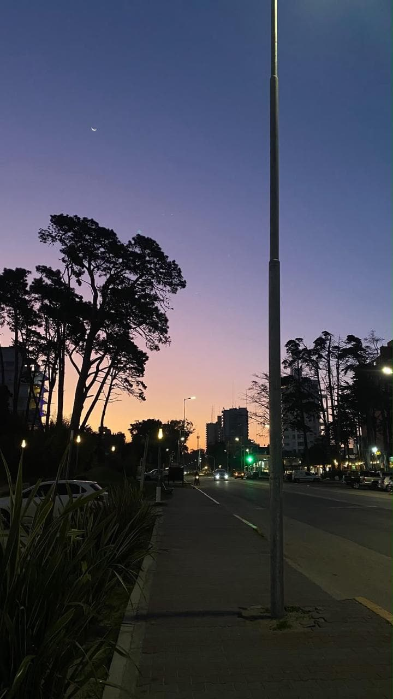
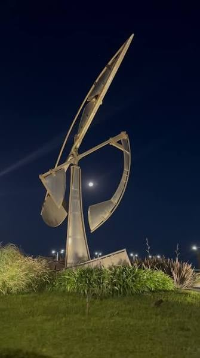
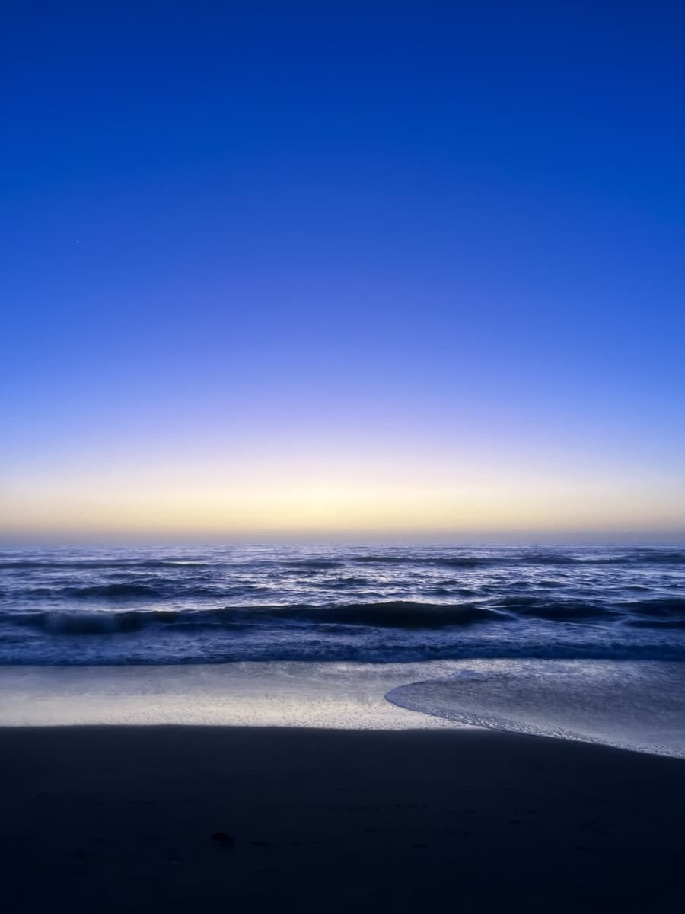
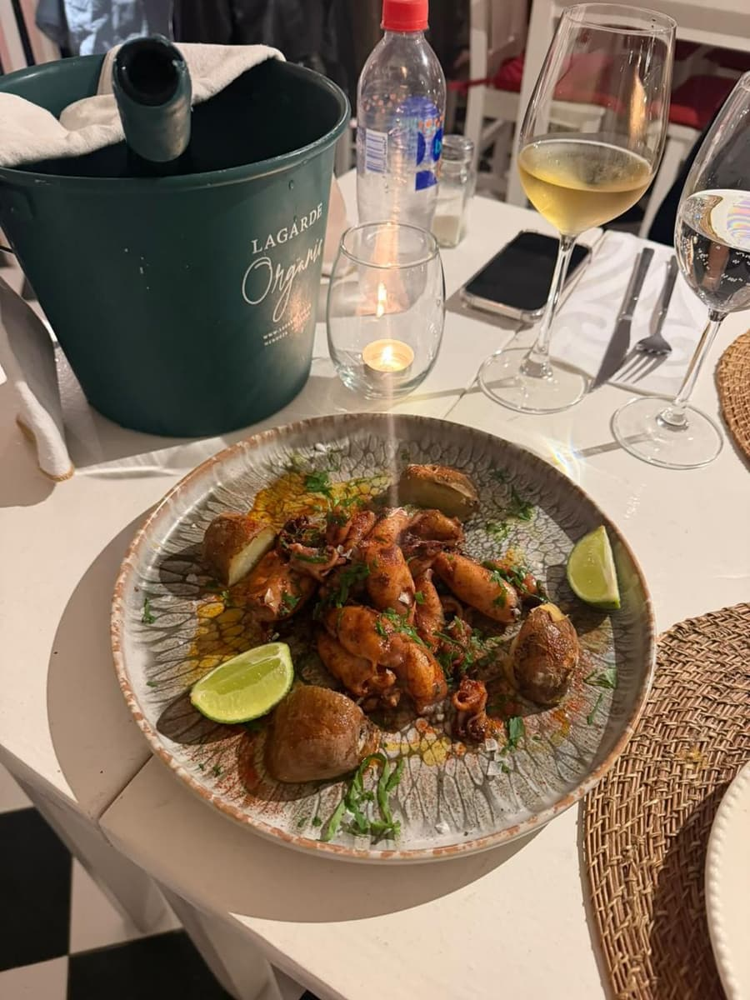
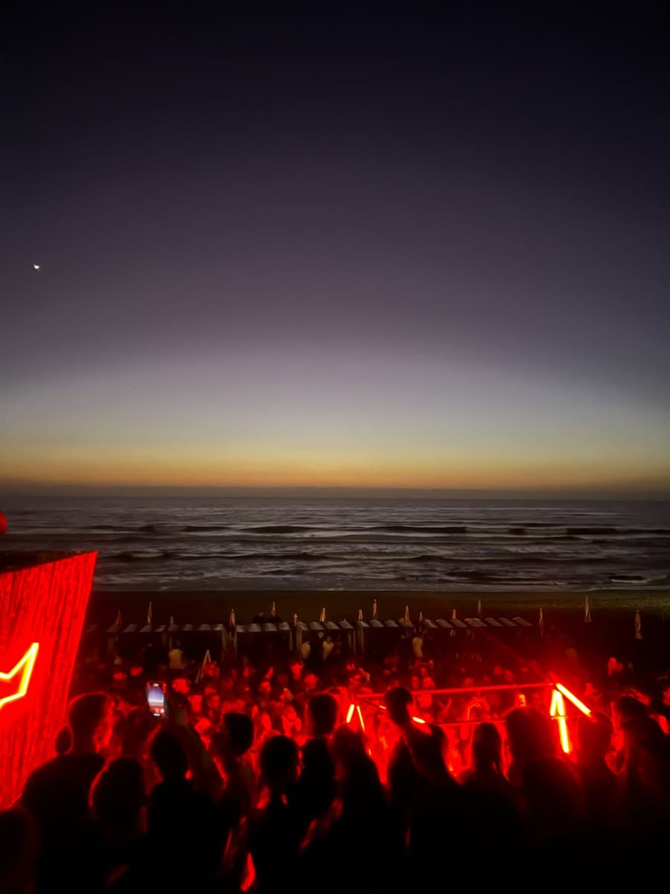

Cuando se hace de noche, el centro de Pinamar se llena de gente. En verano todo arranca tarde: la cena empieza alrededor de las 21 h y la salida sigue hasta la madrugada. Fuera de temporada es más tranquilo, pero siempre hay algún lugar abierto.
Es la parte del día donde más se nota la diferencia entre ir en familia o con amigos. Para cerrar el recorrido elegimos la Av. Bunge, la avenida principal de la ciudad, donde están casi todos los restaurantes, heladerías y bares.
En esta parada
Horario sugerido: desde las 21 h
Duración: de 2 horas a toda la noche
Costo: depende de lo que hagas
Para quién: familias y grupos de amigos
Qué llevar: el DNI, abrigo y plata para el taxi

El día se cierra en la Av. Bunge, la avenida principal de Pinamar, donde están casi todos los
negocios y restaurantes. Cuando baja el sol se llenan los bares con mesas en la vereda y la
avenida pasa a ser el punto de encuentro de todos.
La noche tiene dos caras. Para las familias: cenar, tomar un helado y pasear. Para los más
jóvenes: bares, paradores y boliche.
Para cenar hay de todo: pastas, parrilla, pescados y comida de otros países. En temporada conviene reservar o ir temprano, porque a partir de las diez y media cuesta conseguir mesa.
Después de cenar, lo clásico es tomar un helado y caminar por la avenida mirando los negocios. Los más jóvenes arrancan en algún bar o cervecería, siguen en los paradores con DJ y terminan en el boliche.
En verano la avenida está llena desde temprano. Muchos llegan directo de la playa a tomar algo y se quedan hasta la cena. Los fines de semana hay todavía más gente, así que si querés comer en un lugar en particular, es mejor reservar.
Fuera de temporada la noche es mucho más tranquila: hay menos lugares abiertos, pero la avenida igual se puede recorrer y siempre hay algún restaurante para cenar.
La Albúfera fue la primera cervecería artesanal hecha en Pinamar.
Qué hacer
Cenar en la avenida
Hay pastas, parrilla, pescados y comida de otros países. En temporada conviene reservar.
Helado y paseo
Después de cenar, un helado y una vuelta por los negocios de la avenida.
Bares y cervecerías
Uno de los más conocidos es La Albúfera, que fue la primera cervecería artesanal hecha en
Pinamar.
Paradores
De noche varios paradores se transforman en beach clubs con DJ hasta la madrugada.
Boliche
Para terminar la noche. Abren a la madrugada y piden ser mayor de edad.
Así es una noche en Pinamar
Más o menos así se mueve la noche en temporada. Los lugares que abren cambian cada año.
Hora
Qué pasa
21 h
Empiezan las cenas.
23 h
Helado, paseo y los bares llenos.
Después de las 0 h
Los paradores con DJ.
Madrugada
Abren los boliches.

La foto del final
Para cerrar el recorrido, te recomendamos sacarte una foto en la escultura "Dibujando Espacios",
que está frente al mar en Av. Bunge y Av. del Mar. Es el mismo lugar donde empezó el día a la
mañana.
La escultura está justo donde termina la Av. Bunge y empieza la playa, así que es fácil de encontrar. De noche el lugar está tranquilo y se escucha el mar, un buen contraste después del movimiento de la avenida.
Nos gustó la idea de terminar acá porque cierra el círculo: el día empezó frente al mar con el surf y el paseo costero, y termina en el mismo lugar, pero con otra luz y otro ritmo.
Si vas en grupo, es el lugar ideal para la última foto de todos juntos antes de volver o de seguir la noche.
Si vas con amigos, tené en cuenta que la noche en Pinamar arranca tarde. Los paradores se llenan después de medianoche y los boliches abren recién a la madrugada, así que no hace falta apurarse con la cena.
Información útil
Datos
Dónde: Av. Bunge, desde la rotonda de Av. del Mar hacia el centro. La esquina
de Bunge y Shaw es de las que más gente tiene.
Cuándo: todo el año, pero en verano hay mucho más movimiento.
Duración: desde 2 horas (cena y paseo) hasta toda la noche.
Costo: depende de lo que hagas. Caminar por la avenida no cuesta nada.
Para volver bien
La avenida se recorre caminando. Para volver hay taxis y remises.
A la madrugada cuesta conseguir taxi, mejor arreglar la vuelta antes.
No manejes si tomaste alcohol.
Cuidá tus cosas donde hay mucha gente.
Llevá el DNI.
La vuelta es la parte que menos se piensa y la que más complica. A la madrugada hay mucha gente buscando taxi al mismo tiempo, así que lo mejor es arreglarlo antes o tener el número de alguna remisería a mano.
Más fotos
La noche arranca cuando baja el sol en la playa, sigue con la cena y termina en los paradores con música.



Dónde queda
Ubicación aproximada.
Y así termina el recorrido. Si te gustó la idea, podés
reservar el día completo y hacer las
cuatro paradas con todo organizado.